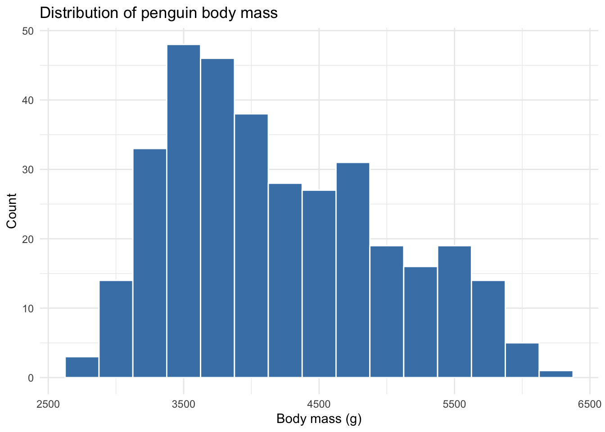
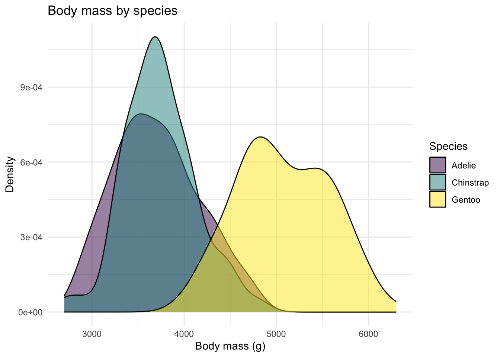
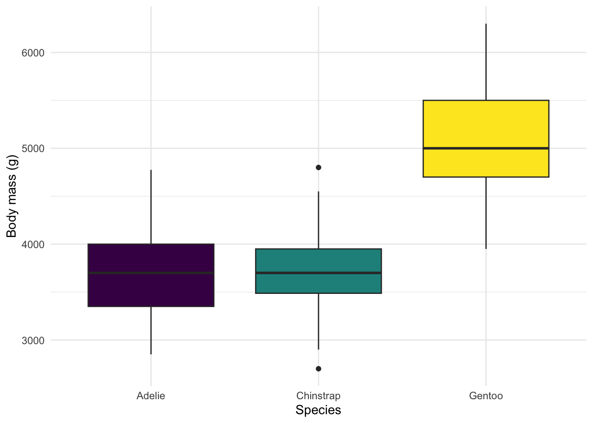
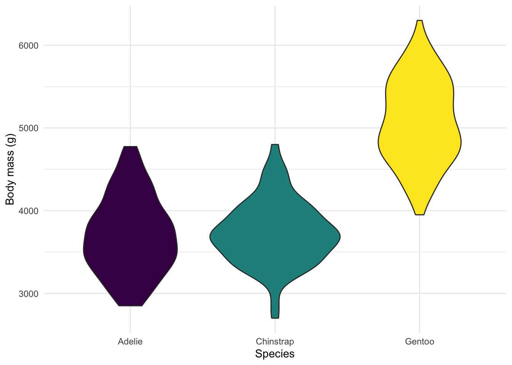
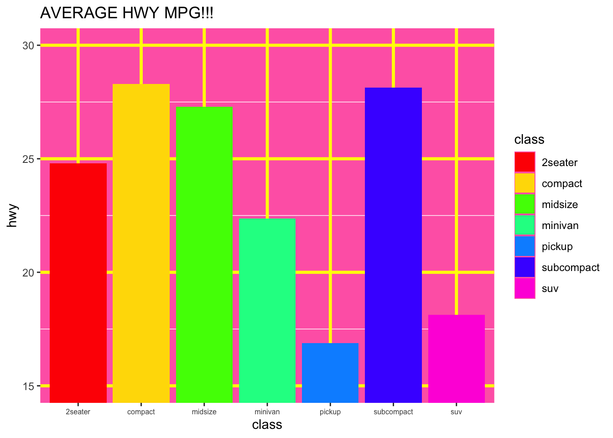
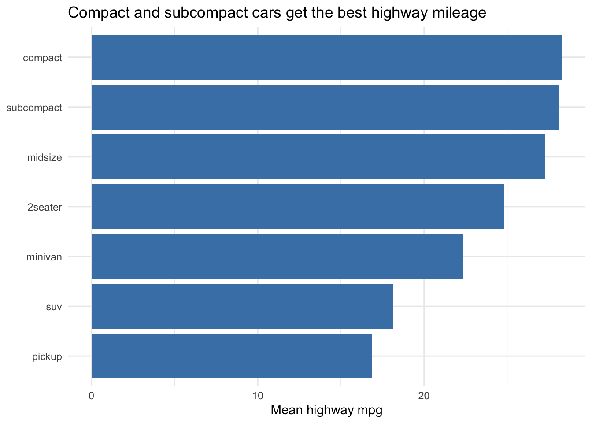

# A tibble: 3 × 4
species mean_flipper sd_flipper n
<fct> <dbl> <dbl> <int>
1 Adelie 190. 6.54 152
2 Chinstrap 196. 7.13 68
3 Gentoo 217. 6.48 124
n() counts every row in the group, including rows where flipper_length_mm is NA. If you want only the rows that contributed to the mean, use sum(!is.na(flipper_length_mm)) instead.
Task 1.2
Create a bar chart showing mean flipper length by species with error bars representing the 95% confidence interval. Use stat_summary() for both the bar and the error bars — this is the pattern from the Session 8 slides.
Your plot should:
Have clear axis labels (not variable names)
Use a clean theme
Have a descriptive title that names what the error bars represent (or include it in a caption)
Use a colorblind-friendly palette (hint: scale_fill_viridis_d())
TipHint
You’ll need stat_summary() twice — once for the bar and once for the error bars:
The legend duplicates the x-axis labels, so it’s safe to drop it with theme(legend.position = "none"). Always say what the error bars represent — in the title, caption, or a figure note.
Part 2: Distributions (25 points)
Task 2.1
Create a histogram of penguin body mass. Try at least three different bin widths in your scratch work to see how the shape changes, then submit a single histogram with the bin width you think works best. In a comment, say what bin width you chose and why.
NoteAnswer
# Bin width of 250 g shows the bimodal shape clearly without being so jagged# that the structure gets lost — wider bins (e.g., 500 g) smooth over the# second mode, narrower bins (e.g., 100 g) are too noisy.ggplot(penguins, aes(x = body_mass_g)) +geom_histogram(binwidth =250, fill ="steelblue", color ="white") +labs(title ="Distribution of penguin body mass",x ="Body mass (g)",y ="Count" ) +theme_minimal()

There’s no single correct bin width — what matters is that you tried a few and made a deliberate choice. Anything in the 200–400 g range here is defensible.
Task 2.2
Create overlapping density plots of body mass, colored by species. Set transparency so all distributions are visible.
TipHint
To color the densities by species, set fill = species inside aes(), then add alpha = 0.5 (or similar) inside geom_density() to make the overlap visible.
NoteAnswer
ggplot(penguins, aes(x = body_mass_g, fill = species)) +geom_density(alpha =0.5) +scale_fill_viridis_d() +labs(title ="Body mass by species",x ="Body mass (g)",y ="Density",fill ="Species" ) +theme_minimal()

The histogram in 2.1 showed a bimodal shape; the density plot reveals why — Gentoo penguins are noticeably larger than the other two species. Adelie and Chinstrap overlap almost entirely.
Task 2.3
Create a boxplot of body mass by species. Then recreate it as a violin plot. In a comment, discuss what each shows that the other doesn’t.
NoteAnswer
ggplot(penguins, aes(x = species, y = body_mass_g, fill = species)) +geom_boxplot() +scale_fill_viridis_d() +labs(x ="Species", y ="Body mass (g)") +theme_minimal() +theme(legend.position ="none")

ggplot(penguins, aes(x = species, y = body_mass_g, fill = species)) +geom_violin() +scale_fill_viridis_d() +labs(x ="Species", y ="Body mass (g)") +theme_minimal() +theme(legend.position ="none")

The boxplot is great for spotting the median, IQR, and outliers at a glance — five-number summary, no shape. The violin shows the full distribution, so you can see whether the data are bimodal, skewed, or symmetric, but you lose the explicit quartile markers. Layering both (geom_violin() + geom_boxplot(width = 0.1)) is a common compromise.
Part 3: The “Bad” and “Good” Graph (25 points)
Using any dataset of your choice (mpg, penguins, diamonds, etc.):
Task 3.1: The Bad Graph
Create an intentionally bad visualization that violates at least 4 design principles. In comments, list what makes it bad.
Examples of “bad” choices (pick things you can actually do in ggplot2):
Rainbow color scheme (scale_color_gradientn(colors = rainbow(7)))
Missing or unhelpful axis labels (variable names instead of plain English)
Truncated y-axis that exaggerates differences (coord_cartesian(ylim = ...))
Way too many categories shown with the same palette
A geom that doesn’t fit the data (e.g., a line plot connecting unordered categories)
NoteAnswer
There’s no single right answer — credit goes to plots that violate at least four principles intentionally and name each violation. Here’s one example.
# Bad choices made on purpose:# 1. Rainbow palette (no perceptual ordering, bad for colorblind viewers)# 2. Truncated y-axis exaggerating tiny differences# 3. Variable names instead of plain-English labels# 4. Garish background and 3-D-style gridlines (chartjunk)# 5. Redundant legend (color and x-axis encode the same thing)ggplot(mpg, aes(x = class, y = hwy, fill = class)) +stat_summary(fun = mean, geom ="bar") +scale_fill_manual(values =rainbow(7)) +coord_cartesian(ylim =c(15, 30)) +labs(title ="AVERAGE HWY MPG!!!", x ="class", y ="hwy") +theme(panel.background =element_rect(fill ="hotpink"),panel.grid.major =element_line(color ="yellow", linewidth =1.2),axis.text.x =element_text(angle =0, size =6) )

Task 3.2: The Good Graph
Create a good version of the same data. In comments, explain your design choices.
NoteAnswer
# Good choices:# 1. Y-axis starts at zero — no exaggeration of differences# 2. Classes reordered by mean mpg so the ranking is the story# 3. Single, muted fill color (no decorative palette)# 4. Plain-English labels and a descriptive title# 5. Minimal theme with no chartjunkmpg |>group_by(class) |>summarize(mean_hwy =mean(hwy)) |>mutate(class =fct_reorder(class, mean_hwy)) |>ggplot(aes(x = mean_hwy, y = class)) +geom_col(fill ="steelblue") +labs(title ="Compact and subcompact cars get the best highway mileage",x ="Mean highway mpg",y =NULL ) +theme_minimal()

A horizontal bar chart with reordered categories is almost always easier to read than a vertical chart with seven labels crammed along the x-axis. Stating the takeaway in the title turns the chart from “data display” into “argument.”
Part 4: Recreate a Figure (15 points)
This task uses data from a real psychology study on partisan bias in news evaluation. Participants were assigned to one of three teams (Team Spain, Team Greece, or No Team) and read news statements slanted toward one side or the other. The outcome is an acceptance threshold (c) from signal detection theory — higher values mean the participant required stronger evidence before accepting a statement as true.
Download partisan_bias.csv from Canvas and save it in your data/raw/ folder. The file has four columns:
Column
Description
participant_id
Unique participant identifier
team
Group assignment: 1 = Team Spain, 2 = Team Greece, 3 = No Team
SP_c
Acceptance threshold for Pro-Spain statements
GR_c
Acceptance threshold for Pro-Greece statements
Task 4.1
Import the data and convert team from a number to a factor with labels “Spain”, “Greece”, and “No Team” (in that order).
TipHint
The safest way to recode is to specify both levels and labels so the mapping is explicit:
mutate(team =factor(team,levels =c(1, 2, 3),labels =c("Spain", "Greece", "No Team")))
Specifying both levels and labels is safer than relying on the default ordering — if a value of 4 or 0 ever sneaks into the data, it becomes NA rather than getting silently mis-labeled.
Task 4.2
Recreate Figure 3 from the paper (provided on Canvas) as closely as you can. Pay attention to:
Geom type and positioning
Error bars
Axis labels and legend title
Theme
You won’t match it exactly — plain text axis labels are fine.
TipHint
The data has SP_c and GR_c as two separate columns (one row per participant). To plot acceptance threshold by team and statement type, you’ll need to pivot to long format first so that statement type becomes one column and the c value becomes another. Look back at Session 5 (Data Tidying) for pivot_longer().
The pivot is the critical step — until statement and c are their own columns, ggplot has no way to map statement type to fill. position_dodge() must be set to the same width on the bars and the error bars, or the error bars float to the wrong place.
Grading Rubric
Task
Points
1.1: Summary table (mean, SD, N by species)
10
1.2: Bar chart with error bars
15
2.1: Histogram with bin width exploration
8
2.2: Overlapping density plots by species
8
2.3: Boxplot vs. violin plot comparison
9
3.1: Intentionally bad visualization
12
3.2: Good visualization with design justification
13
4.1: Import data and convert team to factor
5
4.2: Recreate Figure 3
10
QMD file knits without errors
10
Total
100
Each task is graded on a 4-level scale: full credit, full minus one (small slip), half credit (one major error), or none (not attempted or multiple major errors). “QMD file knits” refers to whether the Quarto document renders successfully, not whether individual code produces correct output.
TipIf a chunk won’t run
If you can’t get a particular chunk to work, set #| eval: false at the top of that chunk so the rest of the document still renders. You’ll lose points on the task itself, but you’ll keep the 10 points for the file knitting cleanly.
Submission
Submit:
NotePSY 510 (Graduate Students)
Students enrolled in PSY 510 must complete the following extension in addition to all tasks above.
Graduate Extension: Publication-Ready Figure
Creating figures for a course assignment and creating figures for a manuscript are different tasks. Journals specify file format, resolution, and dimensions, and reviewers expect a caption that stands on its own without the surrounding text.
Task G.1
Choose the figure you’re most proud of from Parts 1–3. Look up the author guidelines for one real journal in your area (Psychological Science, JPSP, Emotion, or similar) and save the figure at 300 dpi with dimensions matching their specifications.
# Example — adjust width/height to your target journal's specs:ggsave("publication_figure.tiff",plot = my_plot,width =3.5, height =3,units ="in", dpi =300)
Task G.2
Write a figure caption in APA style — the kind you would include in a manuscript. A good APA caption:
Starts with a bold figure number and title (e.g., Figure 1.Mean Flipper Length by Species)
Describes what the figure shows in one or two sentences
Defines any abbreviations
States what the error bars represent (if applicable) and the N
Stands alone — a reader who hasn’t read the paper should understand the figure
Include the caption as a comment directly above your ggsave() call. (We’ll cover APA figure conventions in more depth in Session 16; for now, a thoughtful caption is all that’s needed.)
Task G.3
In 3–5 sentences (as a comment), justify your design choices: Why this geom? Why this color palette? What did you deliberately remove or simplify? Connect your reasoning to the perception and design principles from Session 9.
Submission: Add ggsave(), the caption, and the justification to your .qmd file under a clearly marked ## Graduate Extension section. Submit the saved figure file alongside your .qmd and HTML.